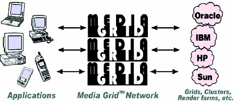

Figure 1: The Media Grid features a simplified API that shields application and web developers from the back-end complexity typically associated with high-performance computing systems such as clusters, computational grids, and rendering farms.
Back to Article